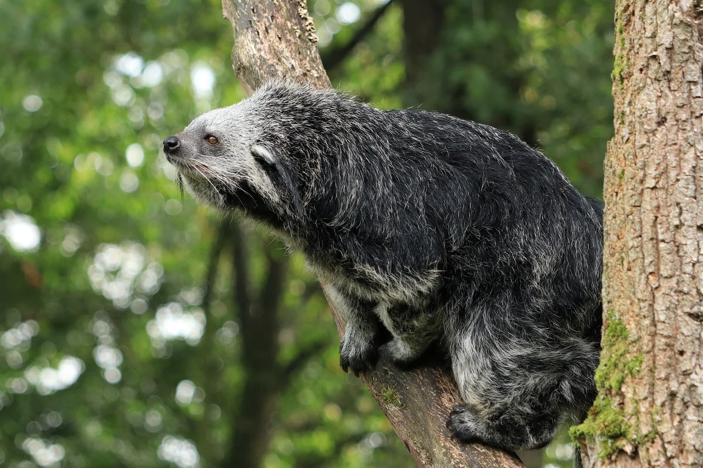

Habitat, Behavior & Diet

Binturongs are forest animals that spend much of their lives above the ground. Their climbing ability, broad diet, and mostly nocturnal lifestyle help them survive in tropical forests across Asia.
Where they live
Binturongs occur across parts of South and Southeast Asia. They are associated with tropical and subtropical forests and depend heavily on trees for travel, shelter, feeding, and resting.
Life in the canopy
Binturongs are mostly arboreal, meaning they spend a large amount of time in trees. They move slowly and carefully through branches and often rest high above the forest floor during the day. They are generally most active at night.
What they eat
Even though binturongs belong to the order Carnivora, they eat a large amount of fruit. Their diet can also include leaves, eggs, insects, fish, birds, rodents, and other small animals.
- Figs and other fruits
- Leaves and plant material
- Eggs
- Insects and other small invertebrates
- Small vertebrates when available
Forest seed dispersers
Fruit-eating animals can play an important role in forest ecology. Binturongs swallow seeds along with fruit and later deposit those seeds in other locations. This helps some plants spread through the forest.